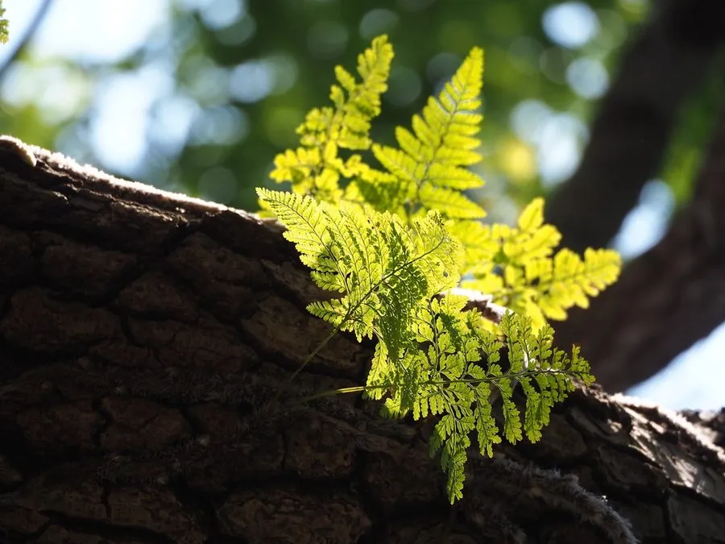

蕨类与裸子植物 · 植物界
圆盖阴石蕨 Humata griffithiana

圆盖阴石蕨是附生蕨类，根状茎粗壮如石蚕、密生鳞片，叶片三角状细裂，常附生于树干和岩壁，可入药。
- 分类
- 门蕨类植物门纲水龙骨纲目水龙骨目科骨碎补科属阴石蕨属
- 栖息环境
- 热带、亚热带雨林的树干、岩壁与石缝，喜阴湿
- 地理分布
- 中国华南、西南及台湾等地，东南亚也有分布
- 保护级别
- 暂无评估；野生种群常见
物种志
圆盖阴石蕨是骨碎补科附生蕨类，株高 10–25 cm。根状茎粗壮、肉质，长而横走，表面密生灰白色或褐色的鳞片，形似石蚕。叶远生，叶柄细长；叶片三角状卵形至披针形，二至三回羽状深裂，末回小羽片细密。孢子囊群圆形，囊群盖圆形，因此得名“圆盖”。
圆盖阴石蕨喜阴湿环境，常附生于热带、亚热带雨林的树干、岩壁与石缝中，在南方山区和园林中可见。它靠根状茎匍匐蔓延，以孢子繁殖，栽培时需用疏松透气的附生基质。圆盖阴石蕨的根状茎在民间作药用，称“阴石蕨”或“石蚕”，有祛风除湿、活血止痛之效。它株形小巧、叶形细密，也常被用于假山、树桩盆景的附生点缀。
形态与习性
- 株高10–25 cm
- 根状茎粗壮横走，密生鳞片如石蚕
- 叶二至三回羽状深裂
- 孢子囊群圆形，具圆形囊群盖
- 药用根状茎祛风除湿、活血止痛
趣味知识
- 圆盖阴石蕨的根状茎粗壮多鳞片，看起来像一条石蚕。
- 它附生在树干和岩壁上，是典型的附生蕨类。
- 它的孢子囊群和囊群盖都是圆的，名字由此而来。